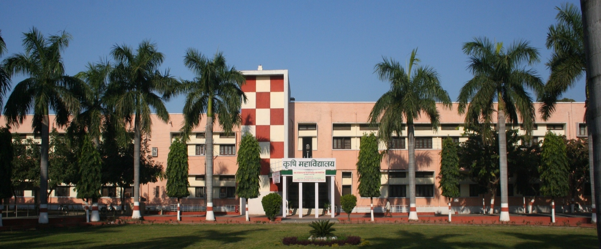

The founding college of India’s first agricultural university, inaugurated on 17 November 1960 by Pandit Jawahar Lal Nehru.
College of Agriculture is the most prestigious constituent of G. B. Pant University of Agriculture and Technology, Pantnagar.
It came into being on 17th November 1960 when Pandit Jawahar Lal Nehru, the first Prime Minister of India, inaugurated the university. The College has very vibrant and challenging ecosystem of teaching-learning, research and innovations which nurtures each student for a grand future ahead. The College has 11 departments, more than 30 laboratories, digitally equipped lecture complexes, meditation and wellness centre, library, Conference Rooms, Auditorium, Educational Technology Cell and hostel facilities.
The college has the pride of producing thousands of brilliant graduates, postgraduates and research scholars since 1960 who are well-recognised across the world in development sector. Dr. Islam A. Siddiqui, who served as Chief Agricultural Negotiator with the rank of ambassador in the ministry of President Barack Obama in USA was also a graduate of this college. Present Foreign Secretary of India, Sri Vinay Mohan Kwatra, is also a graduate of this college. Hundreds of very successful and illustrious alumni of this college have been reigning across the academia and industry across the country and the world.
The college inherits the legacy of doing seminal researches in agriculture and allied sector with focus on cutting-edge technologies. The college aspires to get the most talented students so that they may emerge as the builders of the next green revolution of the country, preserving food and nutritional security. The college has more than 150 illustrious and experienced scientists, and provides an atmosphere not only for healthy academic activities but also for all-round growth and development of student’s personality.
The College has Heads of Departments, Board of Faculty of Agriculture, College Core Action Group, College Maintenance Group, College Documentation and Showcasing Group, College Academic Group, College Placement Cell, College Disciplinary Committee and many other supporting groups for academic purposes including RAWE, AIT, ELP, and Departmental societies. This compact ecosystem sustains the quality and competence at all levels. The Dean of the College directly coordinates and upkeeps all the above activities to keep the system agile and productive.
The college students have been widely selected for higher studies in leading institutions including IARI, IVRI, NDRI, IIM Ahmedabad, IRMA and others. The students have also been well-placed in the government sector, corporates and development sector. The college takes utmost efforts for the upbringing of each student through soft skill nurturing, over-all personality development, value building and leadership development under the Agriculture Society and its multiple bureaus.
Each department maintains its own faculty, laboratories, and postgraduate programmes.
Admission to these courses is done through an entrance examination conducted by the University.
Research thrust areas and projects, as recorded by the departments of the College.
In the past 51 years of its existence, the department has built up expertise in almost all major fields of agricultural economics. Presently, the department has identified the following research thrust areas.
The department of Vegetable Science was established on January 31, 1995 after the bifurcation of the existing department of Horticulture. The department offers M. Sc. and Ph. D. degrees in Vegetable Science with emphasis on vegetable breeding and production technology. The seats for post-graduation students are six in the M. Sc. Ag. and four in Ph.D.
Problem oriented basic and applied research related to soils is carried out through post-graduate thesis research and externally funded research projects. Until 2011 more than 60 research projects funded by various national agencies (ICAR, NATP, CSIR, DST, DBT, UPDASP, U.P. Govt., IFFCo, RCF and others) and international agencies (IRRI, CIMMYT etc.) have been completed; currently, 21 research projects including 11 All India Coordinated Research Projects, one IFFCo Chair project and 7 ad-hoc / NAIP / competitive grant projects are in operation in the Department.
In the source document (COAresearch.pdf), this section carries the heading “Department of Plant Pathology”, but its content is soil-science research. It is shown here under Soil Science; the original heading is noted for the record.
| # | Research project | Principal Investigator | Co-Principal Investigator(s) | Funding Agency |
|---|---|---|---|---|
| A. All India Coordinated Research Projects (AICRP) | ||||
| 1 | AICRP on MULLaRP (Soil Microbiology component) | Dr. Ramesh Chandra | Dr. Navneet Pareek | ICAR |
| 2 | AICRP on Chickpea (Soil Microbiology component) | Dr. Ramesh Chandra | Dr. Navneet Pareek | ICAR |
| 3 | AICRP on Soybean improvement (Soil microbiology component) | Dr. K.P. Raverkar | — | ICAR |
| 4 | AICRP on maize improvement (Soil Science component) | Dr. Veer Singh | — | ICAR |
| 5 | AICRP on water management (Soil science component) | Dr. H.S. Kushwaha | Dr. Veer Singh | ICAR |
| 6 | AICRP on Long Term Fertilizer Experiments | Dr. Shri Ram | — | ICAR |
| 7 | AICRP on Soil test crop response correlation | Dr. Sobaran Singh | Dr. Ajaya Srivastava, Dr. Poonam Gautam | ICAR |
| 8 | AICRP on micro and secondary nutrients and pollutant elements in soils and plants | Dr. P.C. Srivastava | Dr. S.P. Pachauri | ICAR |
| 9 | AICRP on Agroforestry (Soil Science component) | Dr. H.S. Mishra | — | ICAR |
| 10 | AICRP on Farming System (Soil Science component) | Dr. A.P. Singh | — | ICAR |
| 11 | Development of Agro-Advisory Services based on medium range weather forecasts | Dr. H.S. Kushwaha | — | DST |
| B. Adhoc / Competitive Grant Projects | ||||
| 12 | Evaluation of some multinutrient extractants for testing the availability of micronutrient in soils | Dr. P.C. Srivastava | — | BRNS |
| 13 | IFFCo Chair project on fertilizer use efficiency | Dr. Ramesh Chandra | — | IFFCo |
| 14 | Understanding the mechanism of variation in status of a few nutritionally important micronutrients in some important food crops and the mechanism of micronutrient enrichment in plant parts (Multidisciplinary project) | Dr. P.C. Srivastava | Dr. S.P. Pachauri | NAIP (ICAR) |
| 15 | Yield forecasting for Rice, wheat and sugarcane crops for Tarai and Bhabar Agro-climatic zone of Uttarakhand | Dr. H.S. Kushwaha | Dr. Veer Singh | Earth Science, Govt. of India |
| 16 | GPS and GIS based model soil fertility maps for selected districts for precise fertilizer recommendation to the farmer of India | Dr. Shri Ram | Dr. Ajaya Srivastava, Dr. Poonam Gautam, Dr. S.P. Pachauri | Min. of Agriculture, Govt. of India |
| 17 | Effect of UPH 110 in wheat and UPH 1110 in Mustard on soil physico-chemical and micro-flora counts in ongoing bio-efficacy trials in the University and other centres | Dr. Ramesh Chandra | Dr. K.P. Raverkar | M/s United Phosphorus Limited |
| 18 | Bio-efficacy study of Jump Start in Wheat | Dr. Ramesh Chandra | Dr. Navneet Pareek | M/s Novozymes South Asia, Bangalore |
| 19 | Bio-efficacy studies of bio fertility product JumpStart in chickpea | Dr. Ramesh Chandra | Dr. Navneet Pareek | M/s Novozymes South Asia, Bangalore |
| 20 | Evaluation of fertilizer potential of seaweed sap in green gram and black gram | Dr. K.P. Raverkar | Dr. Ramesh Chandra | Central Salt and Marine Chemicals Research Institute, Gujarat |
| 21 | Niche area of excellence in Geoinformatics for natural resource management and precision farming | Dr. A. S. Nain | Dr. Ramesh Chandra, Dr. A.P. Singh | ICAR, New Delhi |
A Hi-tech Agriculture Diploma for government-sponsored international participants, run on the historic Pantnagar campus.
The International School of Agriculture is yet another feather in the cap of the University, mandated to bring up excellent professionals in the agricultural field from across the globe by nurturing them in the science and art of Hi-tech agriculture. It has been established to create a connect with scholars, researchers and students of other countries, supporting the vision of the Government of India in generating global cooperation for the improvement of higher education and research in agriculture, in alignment with the United Nations sustainable development goal of a hunger-free and food-secured world.
Any candidate sponsored from their respective country for the course will be eligible. Candidates must have working knowledge of English, as the programme is held in English only, and working knowledge of any field of agriculture through study, training or practice. They should be prepared to take practical exercises for hands-on training.
Candidates should be nominated by their respective government for admission to the Hi-tech Agriculture Diploma course.
All admissions are subject to a medical fitness certificate as per the medical standard prescribed for foreign nationals, submitted with the application. Candidates should be double vaccinated and carry an RTPCR report of a check-up done within 72 hours of arrival in India.
The normal duration is six months. Initial three months of classes are held on the Pantnagar campus; the remaining three months are follow-up classes on the practices and technologies taught, held online. The diploma requirement must be completed within the six-month duration.
The internal examination system of the University applies, and candidates are governed by the academic regulations of the internal exam system. Candidates successfully completing the courses are awarded a Diploma by the University.
Highly skilled and proficient faculty members and visiting faculty cover the courses. Proper boarding and lodging facilities are provided to international students with amenities of hospitality and housekeeping.
Specialized and applied aspects of Hi-tech agriculture, including Agronomy, Horticulture, Plant Protection, Food Processing, Animal and Fisheries Sciences and Agri-business Management, are covered under the diploma. The programme is flexible and customized to the specific future role of international participants.
Interested organisations and countries may apply with the profile of candidates by writing to isa.pantnagargmailcom. For any query, please contact:
Dr. S.K. Kashyap · Dean, College of Agriculture and Coordinator, International School of Agriculture
G.B. Pant University of Agriculture & Technology, Pantnagar, Distt. U.S. Nagar, Uttarakhand, India
Ph. +91-5944-233632 (O) · Mobile +91-7500241487 · Email: agpdeanyahoocom
The College of Agriculture is proud to have been serving the cause of agriculture since 1960. This enormous feat has received immense contribution from our alumni and we are proud of each of them. Since 1960, thousands of students have passed out from the College who are serving all across the world in different public and private organizations, as entrepreneurs, as academicians, as scientists, as policymakers, and as responsible global citizens. Our alumni are our consistent strength and we shall continuously make efforts to connect and collaborate with them.
Annual Progress Reports of the College. Each opens as a PDF.